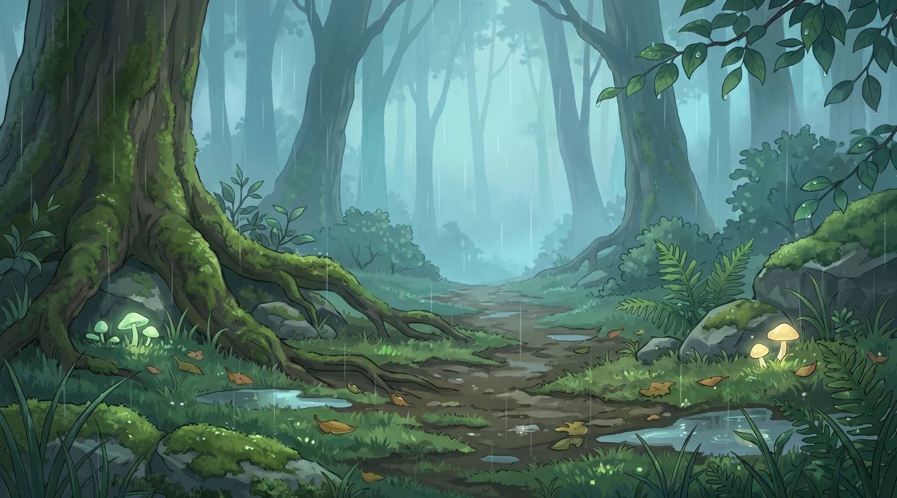

MIDDLE LEVEL · FOREST AREA
星滩
森屿
这里是浅岸星滩的森林区总入口。它不是雨天总区，而是一片会随天气、时间与目光方向变化的森林：低头看见菌子，平视看见切叶蜂，抬头遇见蓝色小鸟。
🍄
小项目 01｜雨后菌径下雨 / 雨后天气触发🐝
小项目 02｜叶片裁缝白天 / 枝叶生态观察🐦
小项目 03｜蓝灵鸟姐妹枝头 / 生灵图鉴三个小项目
这是“主页 → 森林区 → 单独小项目”的中间层。进入小项目后，只保留返回森林区和返回主页，不额外加其他跳转。